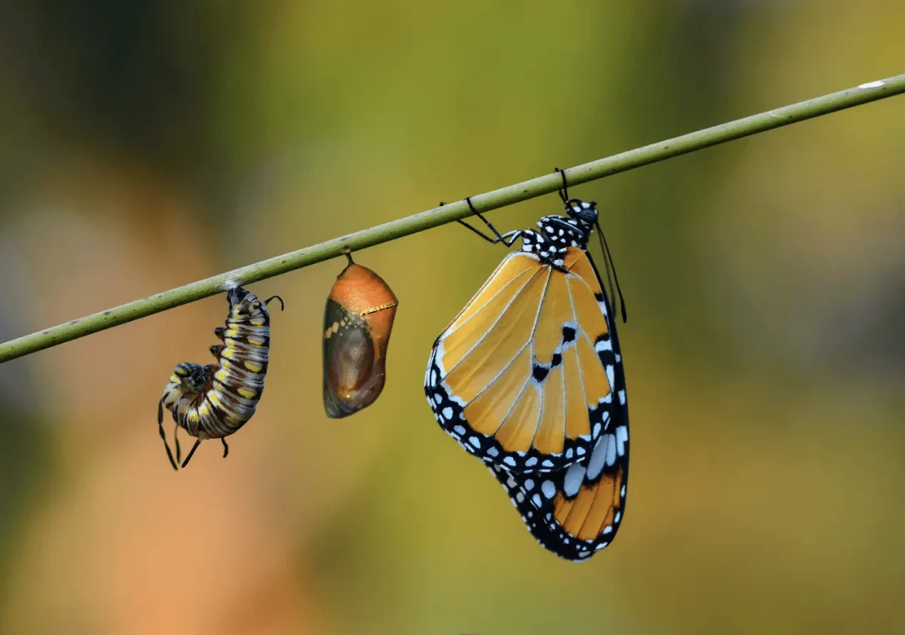

Misli, ki jih ne zadržim zase.
O materinstvu, spremembah, odnosu do sebe in vprašanjih, ki si jih včasih premalokrat zastavimo.

Zakaj imam slabo vest, ko naredim nekaj zase?
Krivda ob času zase ne pomeni nujno, da si sebična. Lahko se pojavi zato, ker prvič ravnaš drugače in tudi svoje potrebe postavljaš med pomembne.
Preberi članek
Zakaj se ne znam ustaviti?
Počitek je lahko težak, kadar je tvoja vrednost dolgo povezana s koristnostjo, odgovornostjo in tem, koliko narediš za druge.
Preberi članek
Ko imam čas zase, ne vem, kaj potrebujem
Si želiš časa zase, ko ga dobiš, pa ne veš, kaj potrebuješ? Preberi, zakaj počitek lahko postane nova naloga in kako ponovno slišati sebe.
Preberi članek
»Sem samo še mama?«
Se po materinstvu ne prepoznaš več? Preberi, zakaj lahko ljubezen do otroka in pogrešanje sebe obstajata hkrati ter kako raziskati, kdo si danes.
Preberi članek
Ko se rodi otrok, se spremeni tudi ženska
Materinstvo lahko spremeni identiteto, potrebe in odnos ženske do sebe. Preberi, zakaj so te spremembe razumljive in zakaj si zaslužijo prostor.
Preberi članekVračanje s porodniškega dopusta: ko se vrneš drugačna
Kako podpreti vračanje s porodniškega dopusta? O izzivih, prehodu in vlogi coachinga za posameznice in podjetja.
Preberi članekKako preprečiti izgorelost v podjetjih: kultura ravnovesja, ne žrtvovanja
Kultura zaupanja in ravnovesja namesto preobremenjenosti. Ustvari delovno okolje, kjer ljudje resnično zmorejo rasti.
Preberi članekKako premagati sindrom vsiljivca (imposter syndrome)
O dvomu vase, ki te želi zaščititi. Spoznaj, kako prepoznati ta glas in verjeti, da si že zdaj dovolj.
Preberi članekKo mir v sebi postane pomembnejši od tega, da imaš prav
O notranji svobodi, ko mir izbereš pred dokazovanjem. Nauči se slišati sebe, ne potrebe po potrditvi.
Preberi članekSamozavest ni nekaj, kar imaš – ampak nekaj, kar gradiš
Samozavest ni lastnost, s katero se rodiš – je pot, ki jo gradiš skozi drobne izbire in notranji dialog.
Preberi članekAvtentično vodenje: Moč resničnega stika
Avtentično vodenje ne temelji na popolnosti, temveč na iskrenosti in povezanosti. Kako voditi z resničnostjo.
Preberi članek
Notranji kritik: Kako ga prepoznati in spremeniti v zaveznika
Notranji kritik pogosto ovira našo rast, a lahko postane vir učenja. Kako ga prepoznati in preoblikovati.
Preberi članekOdpornost in prožnost: Kako graditi notranjo moč celostno
Odpornost ni le miselna trdnost – vključuje telo, čustva, misli in odnose. Kako celostno graditi notranjo moč.
Preberi članekV tej kategoriji trenutno ni zapisov.